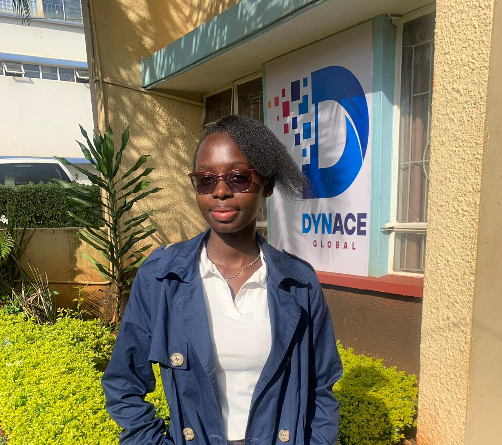

Highly motivated and detail-oriented Software Engineering student at Kisii University with proven experience
in data entry and LMS content editing. Skilled in uploading, formatting, and proofreading
digital learning materials while ensuring accuracy, accessibility, and learner
engagement. Proficient in Microsoft Office Suite, Google Sheets, and programming
in C, Python,Java and JavaScript at an intermediate level, capable of developing script
s and applications to solve real-world problems. Known for being dependable,
organized, and adaptable, with the ability to manage multiple tasks under tight
deadlines while maintaining data integrity. Passionate about contributing to
data-driven operations, software development, and e-learning content management.
I hope to be a successful software engineer in the future,equipped with skills to solve real world problems.I am determined about it and focus on betttering myself daily in order to achieve my great dream of being a software engineer.I keep on pushing due to my consistent passion for the tech industry